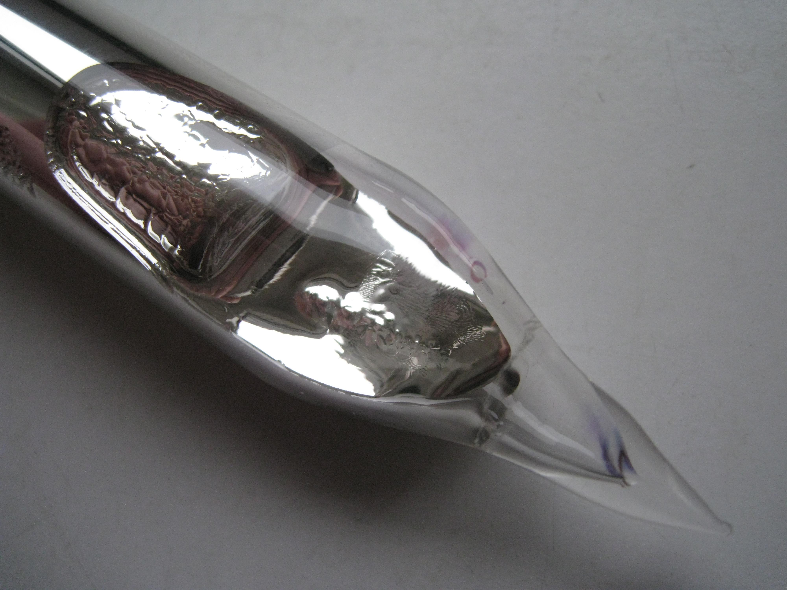

Rubidyum, Rb sembolü ile gösterilen, 37 atom numarasına sahip alkali metaller grubundan bir kimyasal element.
1861 yılında Gustav Kirchhoff ve Robert Bunsen tarafından Almanya'da keşfedilmiştir. Kimyasal açıdan potasyum ve sezyumun özelliklerine benzer özellikler gösterir[3] ama potasyuma oranla çok ender bulunur.
Oda sıcaklığında gümüşi beyaz renkli, yumuşak ve parlak bir katıdır. Kuru havada bile çok çabuk yükseltgenir, bu yüzden açık havada saklanamaz.
Suyu şiddetle ayrıştırır ve ortaya çıkan hidrojeni tutuşturur.
Çok kolay iyonlaşması nedeniyle sezyuma alternatif olarak, uzay araçlarındaki 'iyon motorlarında' kullanılmaktadır.
ana sayfaya dön
